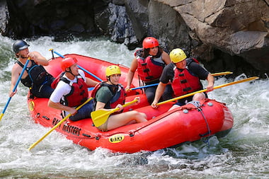

O rafting é um esporte de aventura que envolve a descida de rios em botes infláveis, enfrentando corredeiras e obstáculos naturais. É uma atividade emocionante que combina adrenalina, trabalho em equipe e contato com a natureza. Nossa missão é proporcionar experiências inesquecíveis com diversão e segurança.